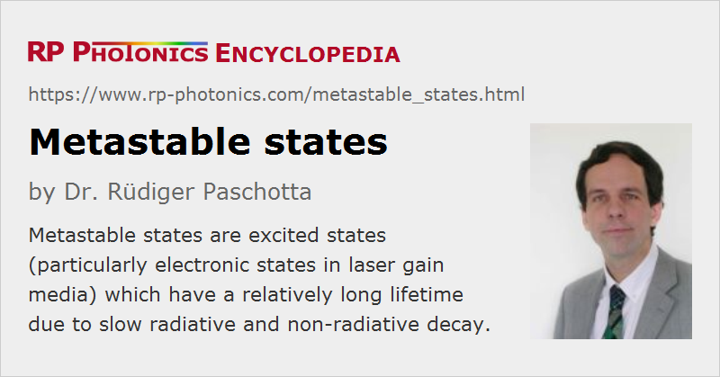

Metastable States
Definition: excited states (particularly electronic states in laser gain media) which have a relatively long lifetime due to slow radiative and non-radiative decay
German: metastabile Zustände
Category: physical foundations
How to cite the article; suggest additional literature
Author: Dr. Rüdiger Paschotta
Solid-state gain media usually have a metastable electronic state as upper laser level, and often some additional metastable states (energy levels). Such states occur in situations where neither radiative nor non-radiative processes can lead to a rapid depopulation of a certain state. Radiative processes can be strongly reduced if all transitions to lower levels are so-called forbidden transitions (or weakly allowed transitions), for which efficient dipole processes are not possible. Strong non-radiative decay processes can arise from multi-phonon transitions and from quenching caused by certain impurities, but such mechanisms can often be avoided. The upper-state lifetime, i.e. the lifetime of the upper laser level, can then be microseconds or even milliseconds – for example, typically around 8–10 ms for erbium-doped fiber amplifiers, or roughly 1–2 ms for ytterbium-doped gain media.

As an example, Figure 1 shows the energy level scheme of thulium (Tm3+) ions. In fluoride fibers, having very low phonon energies, the levels 3H4, 3F4 and 1G4 are metastable, whereas e.g. 3H5 is quenched by multi-phonon processes which transfer the ions to 3H4. These circumstances make it possible to pump thulium ions efficiently into the 1G4 level, from where blue light can be emitted. This is exploited in some upconversion fiber lasers. For thulium ions in silica fibers, 3F4 has a much shorter lifetime, since multi-phonon processes are much stronger. Therefore, silica fibers are not usable for such upconversion lasers.
Generally, laser gain media do not have to exhibit metastable levels; a short-lived level can still be used as the upper laser level provided that the emission cross sections are large enough. (For the threshold pump power, the σ−τ product is the essential quantity.) However, long metastable level lifetimes are very important for Q-switched lasers, as they permit significant energy storage. They also have a strong impact on the laser dynamics, including spiking phenomena. Finally, three-level laser transitions are hardly possible without metastable levels, since a substantial upper-state population as needed for positive net gain would be difficult to achieve.
In laser modeling of doped-insulator solid-state lasers, one usually considers population only of metastable states and the ground state, because only a vanishingly small proportion of the laser-active ions can be in other (short-lived) states. This can substantially simplify laser models.
Questions and Comments from Users
Here you can submit questions and comments. As far as they get accepted by the author, they will appear above this paragraph together with the author’s answer. The author will decide on acceptance based on certain criteria. Essentially, the issue must be of sufficiently broad interest.
Please do not enter personal data here; we would otherwise delete it soon. (See also our privacy declaration.) If you wish to receive personal feedback or consultancy from the author, please contact him e.g. via e-mail.
By submitting the information, you give your consent to the potential publication of your inputs on our website according to our rules. (If you later retract your consent, we will delete those inputs.) As your inputs are first reviewed by the author, they may be published with some delay.
See also: upper-state lifetime, forbidden transitions, Q switching, Q-switched lasers, spiking
and other articles in the category physical foundations
|  |
If you like this page, please share the link with your friends and colleagues, e.g. via social media:
These sharing buttons are implemented in a privacy-friendly way!